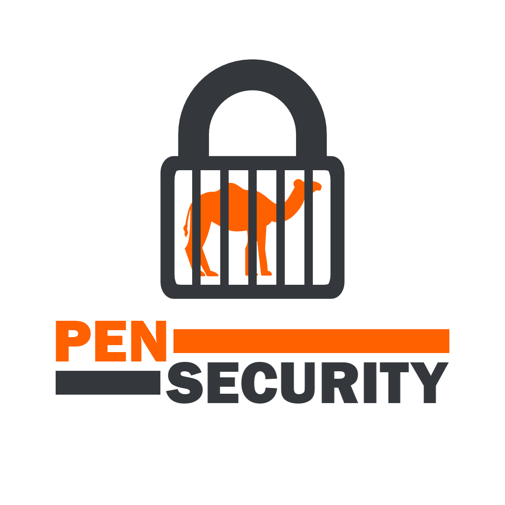

Pen Security is an organisation founded by Pen, specialising in the protection and security of pets and friends. Established with the objective of providing reliable protection, the organisation operates across several areas, including physical security equipment, military operations, and institutional partnerships.

Operations and Development
Pen Security is responsible for the development and production of specialised physical security equipment, particularly locks, reinforced barriers, and access-control systems. These products are designed to protect pets and friends, as well as secure facilities housing potentially dangerous or unusual organisms.
Beyond manufacturing, the organisation maintains military capabilities intended to support protective operations, defend important locations, and respond to significant security threats.
Institutional Partnerships
Pen Security maintains a close partnership with the Pets & Friends Facility, providing security infrastructure and protective services to support its research, containment, and preservation activities.
The organisation also cooperates with the Republic of Penland, working alongside its institutions to strengthen national security and improve the protection of pets and friends.
Leadership and Objectives
Under the leadership of its founder, Pen Security continues to expand its operations and develop new protective technologies. Its long-term objective is to establish a comprehensive security network through equipment development, military capabilities, and cooperation with allied institutions.
Pen Security remains committed to its founding principle: the protection and preservation of pets and friends.
Founded by Pen. Dedicated to the protection of pets and friends.